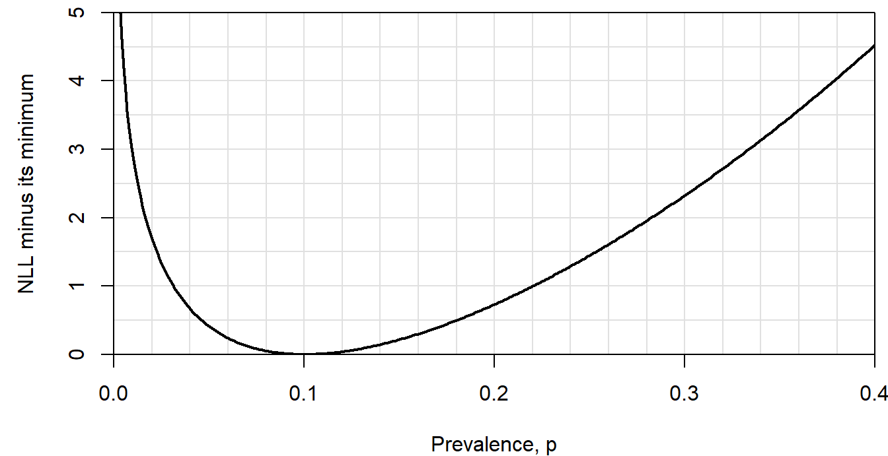
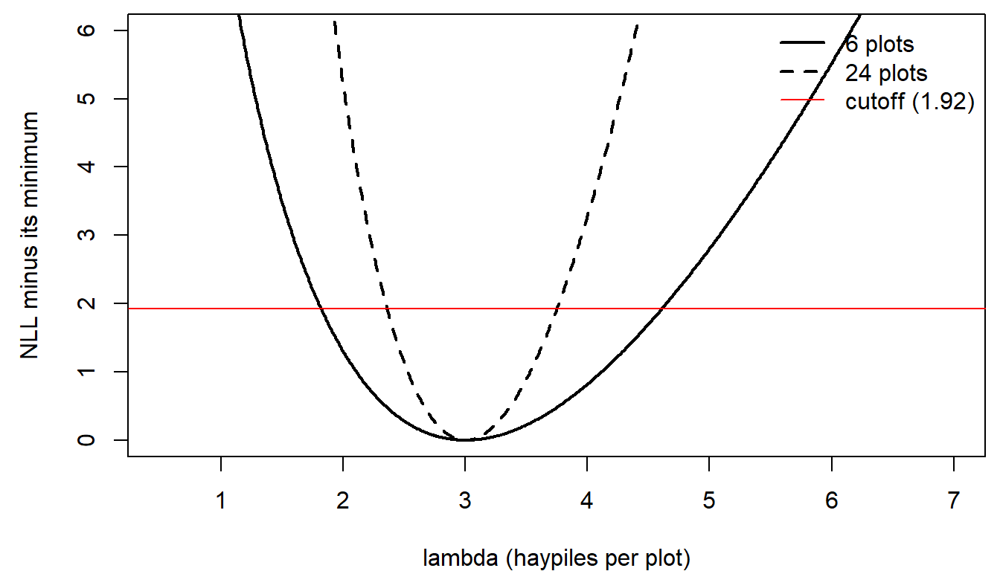
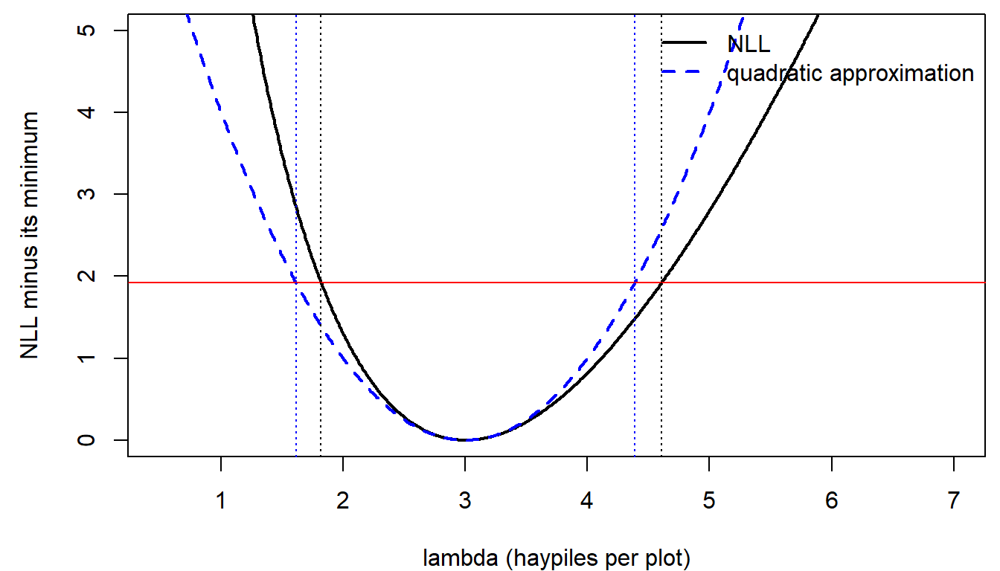
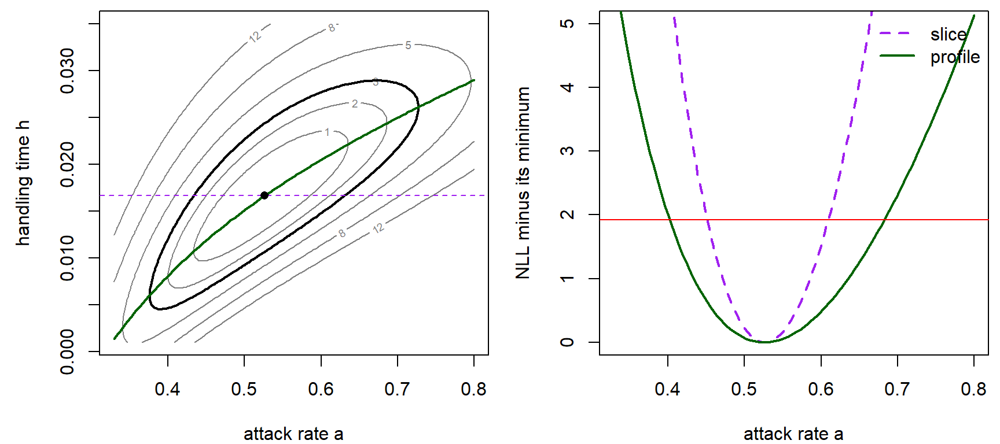
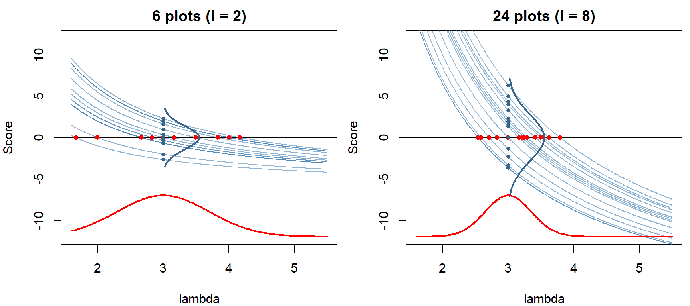
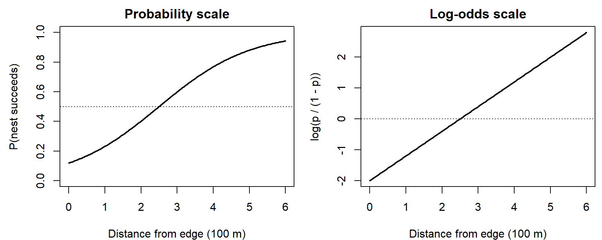
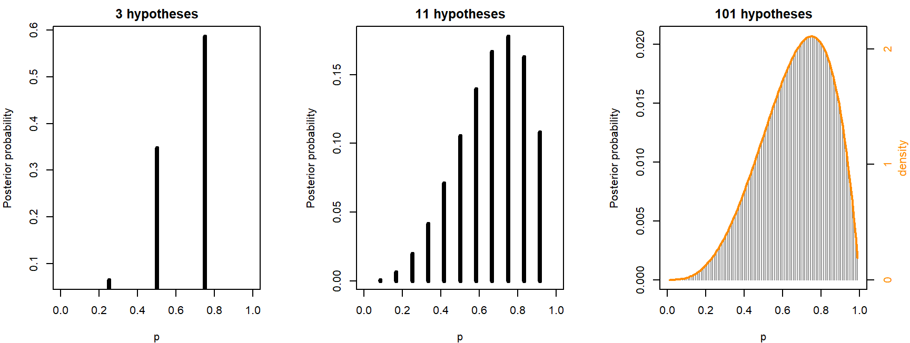
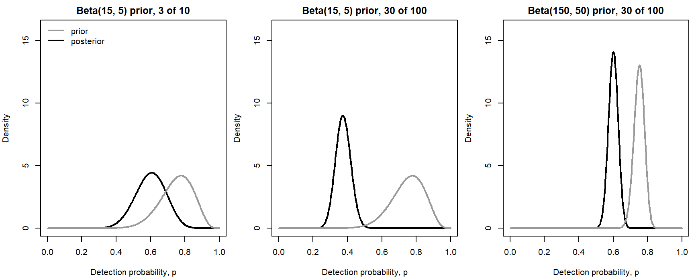

Week 7: Likelihood Intervals and Bayes' Rule for Parameters
NRES 746
Oct. 5-7, 2026
R code from this page is also in the companion script. Package: emdbook (for the tadpole data).
This material follows Bolker, Ecological Models and Data in R, sections 6.4.1 and 6.5 (likelihood intervals, pp. 249-254 and 260-265), 4.3 and 6.2.2 (Bayes' rule, pp. 145-152 and 237-243), and the logistic function on p. 129.
A more detailed, graphical explanation of why likelihood intervals work is in the reference handout Why Likelihood Intervals Work.
Uncertainty from the shape of the likelihood
A maximum likelihood estimate (MLE) is one number. On its own it says nothing about how much the data tell us. This part shows that the answer is in the shape of the likelihood curve near its peak: a narrow valley in the negative log-likelihood (NLL) means the data rule out most values, a broad one means they don't. It ends with the likelihood ratio interval and the 1.92 cutoff.
1. Big picture

Finding an MLE is part of the FIT step. So far that step has produced a single best value for each parameter. Bolker (p. 249) puts it bluntly: a point estimate is of little use without a measure of its uncertainty. The question here is which parameter values are still plausible, given the data?
The same likelihood supports two ways of answering:
- a confidence interval (this part): the parameter is a fixed, unknown number, and the interval is the set of values the data fail to rule out;
- a posterior distribution (below): uncertainty about the parameter is described by a probability distribution.
A confidence interval fits the corroborate/falsify language of the workflow. Values outside a 95% interval are rejected at the 5% level; values inside survive. None of them, including the MLE, is proven.
2. WOD: reading the interval
The WOD (a short warm-up exercise at the start of class) gave students a likelihood curve to read before any explanation. Twenty frogs from a pond were swabbed for chytrid fungus and 2 tested positive. With the number of positives binomial with prevalence \(p\), the NLL minus its minimum looks like this:

The WOD used a common rule of thumb: every value whose NLL is within 2 units of the minimum counts as plausible.
Question: Is the range of plausible values symmetric around the MLE, \(\hat p = 0.1\)? Why might the curve be steeper on one side?
3. Curvature is information
Take counts of active pika haypiles in six talus plots, modeled as Poisson with mean \(\lambda\). The MLE is the sample mean, 3. Now imagine a survey of 24 plots with the same mean (each of the six counts appearing four times).
haypiles <- c(2, 5, 3, 0, 4, 4)
lambda_hat <- mean(haypiles)
nll_pois <- function(lambda, y) {
-sum(dpois(y, lambda = lambda, log = TRUE))
}
lambda_grid <- seq(0.01, 8, by = 0.01)
haypiles_24 <- rep(haypiles, 4)
dnll_6 <- sapply(lambda_grid, nll_pois, y = haypiles) - nll_pois(3, haypiles)
dnll_24 <- sapply(lambda_grid, nll_pois, y = haypiles_24) - nll_pois(3, haypiles_24)
lr_cut <- qchisq(0.95, df = 1) / 2 # 3.84 / 2 = 1.92par(mar = c(4, 4.5, 0.5, 0.5))
plot(lambda_grid, dnll_6, type = "l", lwd = 2, xlim = c(0.5, 7), ylim = c(0, 6),
xlab = "lambda (haypiles per plot)", ylab = "NLL minus its minimum")
lines(lambda_grid, dnll_24, lwd = 2, lty = 2)
abline(h = lr_cut, col = "red")
legend("topright", c("6 plots", "24 plots", "cutoff (1.92)"), lwd = c(2, 2, 1),
lty = c(1, 2, 1), col = c("black", "black", "red"), bty = "n")
- Both curves bottom out at \(\lambda = 3\).
- The NLL is a sum over observations, so four times the data means four times the NLL, everywhere. The valley is four times steeper.
- A steeper valley means the fit gets worse faster as \(\lambda\) moves away from the MLE, so the data rule out more values.
The figure subtracts each curve's minimum, because the height of the minimum also changes with the sample size. More data means a smaller maximum likelihood: Bolker's footnote on p. 254 points out that 1 head in 2 coin flips has probability 0.5, while 500 heads in 1000 flips has probability 0.025, and neither coin is less fair. Only differences in the NLL between parameter values, on the same data, carry information.
4. The likelihood ratio interval
How far up the valley wall is still plausible?
- The WOD's rule of thumb (Edwards, cited by Bolker p. 254) keeps every value within 2 log-likelihood units of the best one: any value whose likelihood is at least \(e^{-2} \approx 1/7.4\) of the maximum.
- The likelihood ratio test gives the frequentist version. When \(\lambda\) is the true value, the deviance, \(2\,[\text{NLL}(\lambda) - \text{NLL}(\hat\lambda)]\), approximately follows a \(\chi^2\) distribution with 1 degree of freedom. Its 95th percentile is 3.84, so on the NLL scale the cutoff is half of that, 1.92 (Wilks' theorem; see the reference handout for why).
The 95% interval is every value whose NLL is within 1.92 of the minimum: where each curve crosses the red line above.
# zero where the NLL is 1.92 above its minimum
f_cut <- function(l, y) nll_pois(l, y) - nll_pois(mean(y), y) - lr_cut
lr_int <- c(uniroot(f_cut, c(0.5, 3), y = haypiles)$root,
uniroot(f_cut, c(3, 8), y = haypiles)$root)
lr_int_24 <- c(uniroot(f_cut, c(1, 3), y = haypiles_24)$root,
uniroot(f_cut, c(3, 6), y = haypiles_24)$root)
round(rbind(plots_6 = lr_int, plots_24 = lr_int_24), 2)## [,1] [,2]
## plots_6 1.82 4.61
## plots_24 2.36 3.75uniroot() finds one crossing on each side of the MLE.
- With 6 plots the interval is 1.82 to 4.61 haypiles per plot. With 24 it's 2.36 to 3.75, about half as wide: four times the data gives an interval \(\sqrt{4} = 2\) times narrower.
- The 6-plot interval isn't symmetric around 3: it reaches 1.61 above but only 1.18 below. Counts can't go below zero, and the NLL rises faster on the low side.
- For the chytrid data, the 1.92 cutoff gives 0.017 to 0.278, nearly the same range as the WOD's 2-unit rule.
- In the workflow's terms, \(\lambda = 1.5\) is falsified at the 5% level, and 2 and 4 both survive. The interval is the set of hypotheses that survive.
The same likelihood ratio test returns later in the semester to compare whole models rather than single parameter values.
Discussion
- The 95% likelihood ratio interval for the pikas runs from 1.82 to 4.61 haypiles per plot. Is \(\lambda = 1.5\) disproven by these data? Is \(\lambda = 3\), the MLE, proven? What would change your answers?
- A reviewer says six plots are too few to trust this interval. Do you agree? How could you check?
Curvature, the Hessian, and two-parameter likelihoods
These topics opened the lab on likelihood intervals. Finding a likelihood ratio interval takes a search; the shortcut most software uses reads the interval off the curvature of the NLL at its minimum. With two parameters the NLL becomes a surface, and there are two ways to reduce it to a curve for one parameter.
1. The quadratic approximation
Near its minimum, the NLL looks like a parabola, and the width of a parabola is set by its second derivative. A second-order Taylor expansion around \(\hat\lambda\) (the first derivative is zero there) gives
\[\text{NLL}(\lambda) \approx \text{NLL}(\hat\lambda) + \tfrac{1}{2}\, \text{NLL}''(\hat\lambda)\,(\lambda - \hat\lambda)^2.\]
Setting the rise equal to the 1.92 cutoff and solving:
\[\tfrac{1}{2}\, \text{NLL}''(\hat\lambda)\,(\lambda - \hat\lambda)^2 = 1.92 \;\Rightarrow\; \lambda = \hat\lambda \pm \frac{1.96}{\sqrt{\text{NLL}''(\hat\lambda)}}.\]
So the standard error is \(1/\sqrt{\text{curvature}}\) (Bolker eq. 6.5.5), and the interval is the familiar estimate \(\pm\) 1.96 standard errors. optim(..., hessian = TRUE) estimates the curvature numerically. (The matrix of second derivatives is called the Hessian; with one parameter it's a single number.)
fit <- optim(par = 2, fn = nll_pois, y = haypiles, method = "Brent",
lower = 0.01, upper = 20, hessian = TRUE)
fit$hessian## [,1]
## [1,] 2se_lambda <- 1 / sqrt(fit$hessian[1, 1])
wald_int <- fit$par + c(-1, 1) * qnorm(0.975) * se_lambda
round(c(se = se_lambda, lower = wald_int[1], upper = wald_int[2]), 2)## se lower upper
## 0.71 1.61 4.39quad_approx <- 0.5 * fit$hessian[1, 1] * (lambda_grid - lambda_hat)^2
par(mar = c(4, 4.5, 0.5, 0.5))
plot(lambda_grid, dnll_6, type = "l", lwd = 2, xlim = c(0.5, 7), ylim = c(0, 5),
xlab = "lambda (haypiles per plot)", ylab = "NLL minus its minimum")
lines(lambda_grid, quad_approx, lwd = 2, lty = 2, col = "blue")
abline(h = lr_cut, col = "red")
abline(v = lr_int, lty = 3)
abline(v = wald_int, lty = 3, col = "blue")
legend("topright", c("NLL", "quadratic approximation"), lwd = 2, lty = c(1, 2),
col = c("black", "blue"), bty = "n")
- The quadratic (Hessian) interval, 1.61 to 4.39, is symmetric by construction. The likelihood ratio interval, 1.82 to 4.61, follows the lopsided curve.
- With more data the NLL gets closer to a parabola, and the two intervals agree.
- The practical default. In most models with several parameters, the standard errors that software reports (
summary()of aglm(),lme4,glmmTMB, and so on) come from this curvature, because it's cheap. A likelihood ratio interval is the check for key parameters, small samples, and estimates near a boundary.
Why a second derivative? The first derivative is zero at the MLE, so it says nothing about width. The second derivative says how fast the slope picks up as you move away, which is how fast the fit gets worse. A narrow parabola and a wide one with the same vertex differ only in their second derivative.
Compare the two intervals for other data in the widget. The presets include the pikas, the same mean with four times the data, and the chytrid survey from the WOD:
Question: Switch to the chytrid preset (2 of 20 positive). What goes wrong with the Hessian interval, and why can't the likelihood ratio interval have the same problem? How many frogs would you need to swab (keeping 10% positive) before the two intervals roughly agree?
2. More than one parameter: slices and profiles
Bolker's tadpole predation data (Figures 6.7-6.8) fit a Holling type II model: the probability a tadpole is killed is \(p = a/(1 + a h N)\) at initial density \(N\), with attack rate \(a\) and handling time \(h\), and the number killed is binomial.
library(emdbook)
data(ReedfrogFuncresp)
initial_n <- ReedfrogFuncresp$Initial
killed <- ReedfrogFuncresp$Killed
nll_holling <- function(a, h) {
p <- a / (1 + a * h * initial_n)
-sum(dbinom(killed, size = initial_n, prob = p, log = TRUE))
}
tad_fit <- optim(c(0.5, 0.0125), function(par) nll_holling(par[1], par[2]),
method = "L-BFGS-B", lower = c(0.01, 0.0001),
upper = c(2, 0.1), hessian = TRUE)
a_hat <- tad_fit$par[1]
h_hat <- tad_fit$par[2]
min_nll <- tad_fit$value
round(tad_fit$par, 4)## [1] 0.5265 0.0167There are two ways to get a curve for \(a\) alone:
- a slice holds \(h\) at its best value, \(\hat h\), and varies \(a\);
- a profile re-optimizes \(h\) for each value of \(a\), so it follows the floor of the valley.
a_seq <- seq(0.33, 0.8, length.out = 121)
h_seq <- seq(0.001, 0.035, length.out = 121)
nll_surf <- outer(a_seq, h_seq, Vectorize(nll_holling))
profile_h <- sapply(a_seq, function(a) {
optimize(function(h) nll_holling(a, h), c(0.0001, 0.1))$minimum
})
profile_a <- sapply(seq_along(a_seq), function(i) nll_holling(a_seq[i], profile_h[i]))
slice_a <- sapply(a_seq, nll_holling, h = h_hat)
par(mfrow = c(1, 2), mar = c(4, 4.5, 0.5, 0.5))
contour(a_seq, h_seq, nll_surf - min_nll, levels = c(1, 2, 3, 5, 8, 12),
xlab = "attack rate a", ylab = "handling time h", col = "grey50")
contour(a_seq, h_seq, nll_surf - min_nll, levels = qchisq(0.95, 2) / 2,
add = TRUE, lwd = 2, drawlabels = FALSE) # 95% joint region
abline(h = h_hat, lty = 2, col = "purple")
lines(a_seq, profile_h, lwd = 2, col = "darkgreen")
points(a_hat, h_hat, pch = 16)
plot(a_seq, slice_a - min_nll, type = "l", lwd = 2, lty = 2, col = "purple",
ylim = c(0, 5), xlab = "attack rate a", ylab = "NLL minus its minimum")
lines(a_seq, profile_a - min_nll, lwd = 2, col = "darkgreen")
abline(h = lr_cut, col = "red")
legend("topright", c("slice", "profile"), lwd = 2, lty = c(2, 1),
col = c("purple", "darkgreen"), bty = "n")
par(mfrow = c(1, 1))- Left: the NLL surface is a tilted valley. A higher attack rate can be partly offset by a longer handling time, so the estimates of \(a\) and \(h\) are correlated. The thick contour is the 95% joint region for both parameters (cutoff \(\chi^2_2(0.95)/2 =\) 3.00).
- Right: the slice and the profile give different intervals for \(a\).
Question: Which of the two curves would you use to build an interval for the attack rate, and why?
With two parameters, the Hessian is a \(2 \times 2\) table of second derivatives. Inverting it gives the variance-covariance matrix of the estimates: variances on the diagonal, the covariance off it.
vcov_tad <- solve(tad_fit$hessian)
round(sqrt(diag(vcov_tad)), 4) # standard errors of a and h## [1] 0.0710 0.0049round(cov2cor(vcov_tad), 2) # correlation between the two estimates## [,1] [,2]
## [1,] 1.00 0.82
## [2,] 0.82 1.00The correlation, 0.82, is the tilt of the valley in one number.
Bonus: why the MLE is approximately normal
The Hessian interval assumes the MLE has a normal sampling distribution with variance \(1/I\), where \(I\) is the curvature (the Fisher information). The argument works through the score, the slope of the log-likelihood, \(U(\lambda) = \frac{d}{d\lambda}\log\mathcal{L}(\lambda)\). The MLE is where the score crosses zero. For the pikas, \(U(\lambda) = \sum y_i/\lambda - n\).
set.seed(746)
lambda0 <- 3
lam <- seq(1.6, 5.5, length.out = 300)
score <- function(l, y) sum(y) / l - length(y)
# score curves for n_sims simulated surveys of n plots, with the predicted bells
score_panel <- function(n, n_sims = 15, ylim = c(-12, 12)) {
info <- n / lambda0
plot(NA, xlim = range(lam), ylim = ylim, xlab = "lambda", ylab = "Score",
main = paste0(n, " plots (I = ", round(info, 1), ")"))
abline(h = 0, lwd = 1.5)
abline(v = lambda0, lty = 3, col = "grey40")
for (i in seq_len(n_sims)) {
y <- rpois(n, lambda0)
lines(lam, sapply(lam, score, y = y), col = adjustcolor("steelblue", 0.6))
points(mean(y), 0, pch = 16, col = "red", cex = 0.8)
points(lambda0, score(lambda0, y), pch = 16, col = "steelblue4", cex = 0.6)
}
yy <- seq(-2.5, 2.5, length.out = 200) * sqrt(info)
lines(lambda0 + 0.55 * dnorm(yy, 0, sqrt(info)) / dnorm(0, 0, sqrt(info)), yy,
col = "steelblue4", lwd = 2)
dx <- dnorm(lam, lambda0, sqrt(1 / info))
lines(lam, ylim[1] + 5 * dx / max(dx), col = "red", lwd = 2)
}
par(mfrow = c(1, 2), mar = c(4, 4, 2, 0.5))
score_panel(6)
score_panel(24)
par(mfrow = c(1, 1))Each blue curve is the score from one simulated survey with true \(\lambda = 3\).
- Each curve crosses zero at that survey's MLE (red dots). The spread of the crossings is the sampling distribution of \(\hat\lambda\).
- At the true value, the heights of the curves (blue dots) are centered on 0. Each height is a sum of independent contributions, one per plot, so the central limit theorem makes them normal. Their variance is the Fisher information \(I\) (here \(n/\lambda\); blue bell).
- Near the truth each curve is close to a straight line with slope \(-I\). A curve at height \(h\) crosses zero about \(h/I\) away, so the MLEs have variance \(I/I^2 = 1/I\) (red bell along the bottom).
- With 24 plots the heights spread more (their variance grows like \(n\)), but the curves get steeper faster (their slope also grows like \(n\)), so the crossings tighten like \(1/\sqrt{n}\).
In the 6-plot panel the curves bend, so the crossings spread farther to the right than the left: the same lopsidedness as the likelihood ratio interval. The reference handout works through each step, including why the variance of the score equals its slope.
Logistic regression and Bayes' rule for parameters
This part starts with the logistic model for a probability that changes with a covariate, and the log-odds scale on which it becomes a straight line. It then turns to Bayesian inference: Bayes' rule applied to parameter values, first a few at a time and then a whole continuum, and the Beta prior that makes the binomial case easy.
1. Logistic regression and the log-odds
Many ecological responses are probabilities that change with a covariate: survival with body size, nest success with distance from a forest edge, mortality with a pesticide dose. A straight line won't do, since a probability must stay between 0 and 1. The logistic function (Bolker p. 129) bends a line into an S-shape that does:
\[p(x) = \frac{e^{a + bx}}{1 + e^{a + bx}} = \frac{1}{1 + e^{-(a + bx)}}.\]
The odds of an event are \(p/(1-p)\): a probability of 0.75 is odds of 3, or "3 to 1." Taking the log of the odds undoes the logistic:
\[\log\frac{p}{1-p} = a + bx.\]
So logistic regression is a straight line on the log-odds scale.
- \(b\) is the change in log-odds per unit of \(x\), and \(e^b\) multiplies the odds.
- \(p = 0.5\) where the log-odds are 0, that is, where \(a + bx = 0\).
- In R,
plogis()is the logistic function andqlogis()the log-odds.
a_ex <- -2 # nest success vs. distance from a forest edge (100s of m)
b_ex <- 0.8
x_seq <- seq(0, 6, length.out = 200)
par(mfrow = c(1, 2), mar = c(4, 4.5, 2, 0.5))
plot(x_seq, plogis(a_ex + b_ex * x_seq), type = "l", lwd = 2, ylim = c(0, 1),
xlab = "Distance from edge (100 m)", ylab = "P(nest succeeds)",
main = "Probability scale")
abline(h = 0.5, lty = 3)
plot(x_seq, a_ex + b_ex * x_seq, type = "l", lwd = 2,
xlab = "Distance from edge (100 m)", ylab = "log(p / (1 - p))",
main = "Log-odds scale")
abline(h = 0, lty = 3)
par(mfrow = c(1, 1))
qlogis(0.75) # log-odds of p = 0.75 is log(3)## [1] 1.098612plogis(qlogis(0.75)) # plogis() undoes qlogis()## [1] 0.75Odds and probability get used interchangeably in casual speech, but odds of 3 is a probability of 0.75, not 3. Try other intercepts and slopes in the widget; the dot marks the chosen distance on both scales:
Question: With \(b = 0.8\), by what factor do the odds of nest success change for every 100 m farther from the edge? For 200 m? Does the probability change by a constant factor too?
2. Big picture

Bayesian inference is another way to do the FIT step, with the same model and the same likelihood. What changes is how the likelihood becomes a statement about the parameter.
- Frequentist view (above): the parameter is a fixed, unknown number, and the data are random. A 95% confidence interval comes from a procedure that captures the true value in 95% of repeated experiments.
- Bayesian view: uncertainty about the parameter is itself described by a probability distribution over its possible values. Before the data that distribution is the prior; after, it's the posterior. The likelihood connects them.
The tool for the update is Bayes' rule.
3. Bayes' rule, from a few hypotheses to a whole distribution
For hypotheses \(H_1, H_2, \ldots\) and data \(D\),
\[P(H_i \mid D) = \frac{P(D \mid H_i)\,P(H_i)}{\sum_j P(D \mid H_j)\,P(H_j)}.\]
The hypotheses can be values of a parameter. Four nests are watched, and three of them succeed (outcomes 1, 1, 0, 1), so the likelihood for the nest success probability is \(\mathcal{L}_4(p) = p^3(1-p)\). Treat \(p = 0.25\), 0.5, and 0.75 as three competing hypotheses, equally likely beforehand:
p3 <- c(0.25, 0.5, 0.75)
lik3 <- p3^3 * (1 - p3)
prior3 <- rep(1/3, 3)
post3 <- lik3 * prior3 / sum(lik3 * prior3)
round(rbind(likelihood = lik3, posterior = post3), 3)## [,1] [,2] [,3]
## likelihood 0.012 0.062 0.105
## posterior 0.065 0.348 0.587sum(lik3) # likelihoods don't add to 1## [1] 0.1796875The likelihoods are 3/256, 16/256, and 27/256, which add to 46/256, not 1. Bayes' rule multiplies by the prior and divides by the total, giving posterior probabilities 3/46, 16/46, and 27/46. With equal priors, the posterior is the likelihood rescaled to add to 1 (Bolker eq. 4.3.16).
Nothing stops us using 100 or 10,000 values of \(p\), still with equal prior weight on each. Here is the same calculation with 3, 11, and 101 values:
# posterior probability at each of n_grid equally spaced values of p (flat prior)
grid_post <- function(n_grid) {
p_g <- seq(0, 1, length.out = n_grid + 2)[-c(1, n_grid + 2)]
w <- p_g^3 * (1 - p_g)
list(p = p_g, prob = w / sum(w), spacing = diff(p_g)[1])
}
par(mfrow = c(1, 3), mar = c(4, 4, 2, 3.2))
for (n_grid in c(3, 11, 101)) {
g <- grid_post(n_grid)
plot(g$p, g$prob, type = "h", lwd = if (n_grid < 20) 4 else 1,
col = if (n_grid < 20) "black" else "grey60", xlim = c(0, 1),
xlab = "p", ylab = "Posterior probability", main = paste(n_grid, "hypotheses"))
if (n_grid == 101) {
lines(g$p, dbeta(g$p, 4, 2) * g$spacing, lwd = 2, col = "darkorange")
axis(4, at = (0:2) * g$spacing, labels = 0:2, col.axis = "darkorange")
mtext("density", side = 4, line = 2.1, cex = 0.7, col = "darkorange")
}
}
par(mfrow = c(1, 1))
grid_tab <- t(sapply(c(3, 11, 101), function(n_grid) {
g <- grid_post(n_grid)
c(n = n_grid, tallest_bar = max(g$prob), bar_over_spacing = max(g$prob) / g$spacing)
}))
round(grid_tab, 3)## n tallest_bar bar_over_spacing
## [1,] 3 0.587 2.348
## [2,] 11 0.178 2.134
## [3,] 101 0.021 2.109dbeta(0.75, 4, 2) # peak of the orange curve## [1] 2.109375- The bars shrink. The tallest bar goes from 0.587 to 0.178 to 0.021. More hypotheses split the same total probability more ways, and with infinitely many, any single value of \(p\) has probability zero.
- Divided by the spacing, they settle down. Probability per unit of \(p\) (bar \(\div\) spacing) gives 2.35, 2.13, and 2.11; by 101 values it matches the peak of the orange curve (2.11). That curve is a probability density, Beta(4, 2), and probabilities now come from areas under it.
So the sum becomes an integral, and the prior and posterior become densities:
\[\underbrace{P(p \mid y)}_{\text{posterior}} = \frac{\overbrace{\mathcal{L}(p)}^{\text{likelihood}}\;\overbrace{P(p)}^{\text{prior}}} {\int_0^1 \mathcal{L}(p)\,P(p)\,dp}.\]
The denominator is a single number, the marginal likelihood: the probability of the data averaged over all parameter values. It only rescales the numerator to area 1. For one parameter it's an easy integral; for 20 parameters it's a 20-dimensional integral, which is why Markov chain Monte Carlo exists. The posterior \(P(p \mid y)\) is a real conditional probability, so it gets a conditioning bar; the likelihood \(\mathcal{L}(p)\) doesn't.
A probability distribution for \(p\) doesn't mean \(p\) itself varies, like a coin flip. The nest success rate is one number; the posterior describes what we know about it. And a density isn't a probability: the peak of the Beta(4, 2) curve is 2.1, which can't be the probability that \(p = 0.75\).
Explore the grid in the widget. Switch the bar heights between probability and probability per unit of \(p\), and change the number of hypotheses or the data:
Question: With the nest data (3 of 4), move the number of hypotheses from 3 to 201. Which readout keeps shrinking, and which settles down? What would the tallest bar be with a million hypotheses?
4. The Beta prior and conjugacy
For \(k\) successes in \(n\) binomial trials, the likelihood is \(\mathcal{L}(p) \propto p^{k}(1-p)^{n-k}\). A Beta(\(\alpha\), \(\beta\)) density has the same shape: \(P(p) \propto p^{\alpha - 1}(1-p)^{\beta - 1}\). Multiply them, the numerator of Bayes' rule:
\[P(p \mid y) \propto p^{k + \alpha - 1}(1-p)^{n - k + \beta - 1},\]
which is another Beta: Beta(\(\alpha + k\), \(\beta + n - k\)). A prior that gives a posterior from the same family is called conjugate. With a conjugate prior there's no integral to compute; updating is just adding counts.
- \(\alpha - 1\) and \(\beta - 1\) act like earlier successes and failures (Bolker p. 237). Beta(1, 1) is flat: no earlier data.
- The nests, 3 of 4 with a flat prior, give Beta(4, 2), the orange curve in the grid figure.
The proportionality sign hides a constant. The constant in front of the Beta density is dropped while multiplying and comes back at the end, because a density has to integrate to 1. That's the denominator of Bayes' rule doing its job.
A worked example with two different priors (a seed germination trial) is on the next page, along with ways to summarize a posterior.
A flat prior is less neutral than it sounds. A prior that is flat on \(p\) is not flat on the log-odds scale from section 1: it piles up near 0 (see the figure here). "Flat" or "uninformative" always means flat on some chosen scale.
Discussion
- With 201 hypotheses for the nest success rate, the posterior probability that \(p = 0.75\) is about 0.010. A labmate concludes that the data give almost no support to 0.75. What's wrong with that conclusion?
- A logistic regression reports a slope of 0.8 per 100 m for nest success, so the odds of success multiply by 2.23 per 100 m. A manager reads this as "nests 100 m farther from the edge are 2.2 times as likely to succeed." When is that close to right, and when is it far off?
Bonus: brute-force Bayes with an informative prior
When the prior isn't flat, the grid in section 3 still works, and for one parameter integrate() can compute the denominator directly. A frog is heard calling on 3 of 10 visits to a pond known to be occupied. What is the detection probability \(p\)?
lik_frog <- function(p) dbinom(3, 10, p)
# posterior density = likelihood x prior / (area under likelihood x prior)
posterior_fn <- function(lik, prior) {
numer <- function(p) lik(p) * prior(p)
marg_lik <- integrate(numer, 0, 1)$value # P(data): one number
function(p) numer(p) / marg_lik
}
prior_flat <- function(p) dbeta(p, 1, 1)
prior_info <- function(p) dbeta(p, 15, 5) # like 14 detections in 18 earlier visits
post_flat <- posterior_fn(lik_frog, prior_flat)
post_info <- posterior_fn(lik_frog, prior_info)
post_mean <- function(post) integrate(function(p) p * post(p), 0, 1)$value
round(c(flat = post_mean(post_flat), informative = post_mean(post_info)), 3)## flat informative
## 0.333 0.600Now suppose the same frog is surveyed 10 times at each of 10 ponds, with these numbers of detections:
detections <- c(3, 1, 6, 2, 3, 2, 6, 1, 3, 3)
lik_ponds <- function(p) sapply(p, function(t) prod(dbinom(detections, 10, t)))
prior_strong <- function(p) dbeta(p, 150, 50) # like 149 detections in 198 visits
post_ponds <- posterior_fn(lik_ponds, prior_info)
post_strong <- posterior_fn(lik_ponds, prior_strong)
round(c(informative = post_mean(post_ponds), strong = post_mean(post_strong)), 3)## informative strong
## 0.375 0.600p_seq <- seq(0.001, 0.999, length.out = 500)
# prior (grey) and posterior (black) on one panel
frog_panel <- function(prior, post, title) {
plot(p_seq, post(p_seq), type = "l", lwd = 2, ylim = c(0, 16),
xlab = "Detection probability, p", ylab = "Density", main = title)
lines(p_seq, prior(p_seq), lwd = 2, col = "grey60")
}
par(mfrow = c(1, 3), mar = c(4, 4, 2, 0.5))
frog_panel(prior_info, post_info, "Beta(15, 5) prior, 3 of 10")
legend("topleft", c("prior", "posterior"), lwd = 2, col = c("grey60", "black"),
bty = "n")
frog_panel(prior_info, post_ponds, "Beta(15, 5) prior, 30 of 100")
frog_panel(prior_strong, post_strong, "Beta(150, 50) prior, 30 of 100")
par(mfrow = c(1, 1))- With one pond, the Beta(15, 5) prior (mean 0.75) outweighs 10 visits, and the posterior mean is 0.600, far above the data's 0.3.
- With ten ponds the data take over: 0.375.
- A prior worth about 200 visits pulls even 100 visits most of the way back: 0.600.
Conjugacy gives the same answers without any integrals, Beta(15 + 3, 5 + 7) for one pond and Beta(15 + 30, 5 + 70) for ten:
round(c(one_pond = 18 / (18 + 12), ten_ponds = 45 / (45 + 75),
strong_prior = 180 / (180 + 120)), 3)## one_pond ten_ponds strong_prior
## 0.600 0.375 0.600